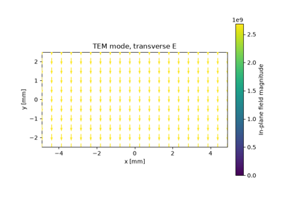
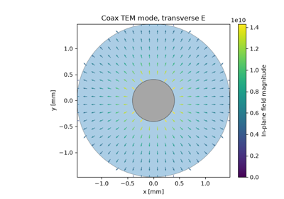
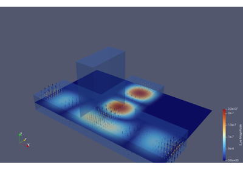
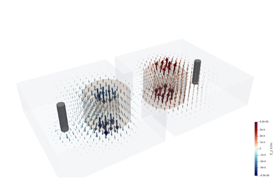
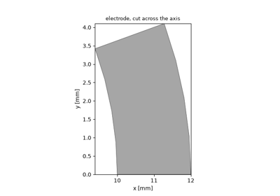
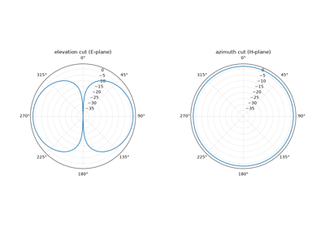

Tutorials#
Executable walkthroughs of the Magnelio public API, ordered from the
first simulation to advanced workflows. Every page is generated from
the runnable script in examples/tutorials/ and can be downloaded
as a .py script or a .ipynb notebook.

Your first simulation: a parallel-plate line
Your first simulation: a parallel-plate line

A coaxial line: solids, booleans, and a coax port
A coaxial line: solids, booleans, and a coax port

Using disk storage: monitors at scale, resume, ParaView
Using disk storage: monitors at scale, resume, ParaView

Capstone: a two-pole dielectric resonator filter
Capstone: a two-pole dielectric resonator filter

Profiles: shapes the primitives do not cover
Profiles: shapes the primitives do not cover

Antenna symmetry: a half-wave dipole as a half model
Antenna symmetry: a half-wave dipole as a half model